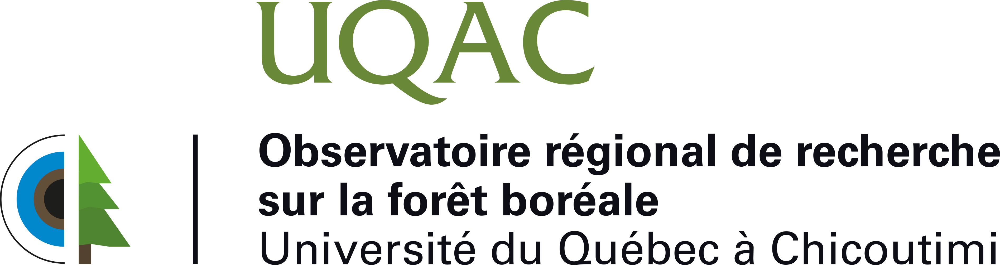

{kind=link}
Fiche MRC
Chargement…
Fiche non disponible pour cette MRC.
Cette application sert de point d'accès pour visualiser et télécharger :
Les FICHES MRC : le portrait des feux de forêts à l'échelle des MRC selon les données historiques.
Les FICHES COMMUNAUTÉ : la composition en combustible et l’évaluation du potentiel d’intensité et de propagation des feux de forêt à proximité des communautés.
INSTRUCTIONS
Pour consulter les fiches à l’échelle des MRC, cliquez directement sur une MRC dans la carte ou sélectionnez-la dans le menu déroulant « MRC ». Un bouton 🗂 Voir la fiche "MRC" apparaîtra.
Une fois une MRC sélectionnée, choisissez la « Communauté » dans le second menu déroulant, puis sélectionnez le « Lieu habité » dans le troisième menu. La fiche s’affichera automatiquement. Vous pouvez aussi cliquer directement sur un point dans la carte pour accéder à la fiche du lieu habité correspondant.
La carte affiche une couleur de fond de vert à rouge, indiquant l’indice de prédisposition des MRC aux feux de forêt (0 à 6). Plus l’indice est élevé, plus la MRC est prédisposée aux feux.
Par exemple : une MRC de couleur rouge (indice 4 à 6) indique qu’elle est prédisposée de manière forte aux feux de forêt.
Note : Cette étude se base sur des données scientifiques pour évaluer la prédisposition des communautés québécoises et autochtones aux feux de forêt selon deux échelles d'analyse : régionale et locale. Pour envisager des actions concrètes pour protéger les communautés, vous adresser aux autorités compétentes.
À cet égard, veuillez consulter l'onglet "RESSOURCES UTILES".
Chargement des données…

Préparez-vous à faire face à un feu de forêt, connaissez les gestes à poser pour assurer votre sécurité et celle de vos proches ainsi que pour protéger votre maison et vos biens.
Consulter les liens suivants pour connaître :
Ce graphique illustre l'évolution annuelle de la fréquence des départs de feux, en distinguant les causes anthropiques (humain) des causes naturelles (foudre).
Ce graphique présente les superficies brûlées annuellement.